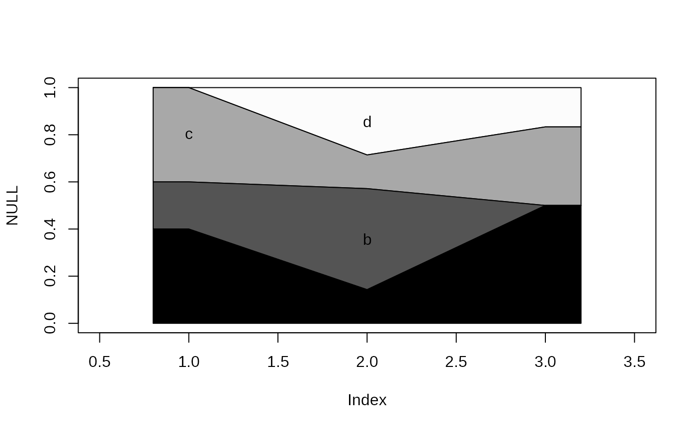
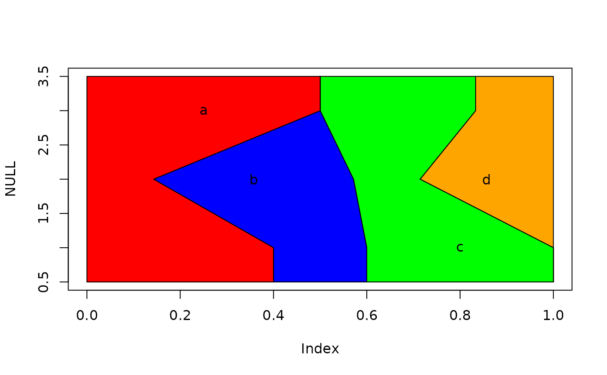
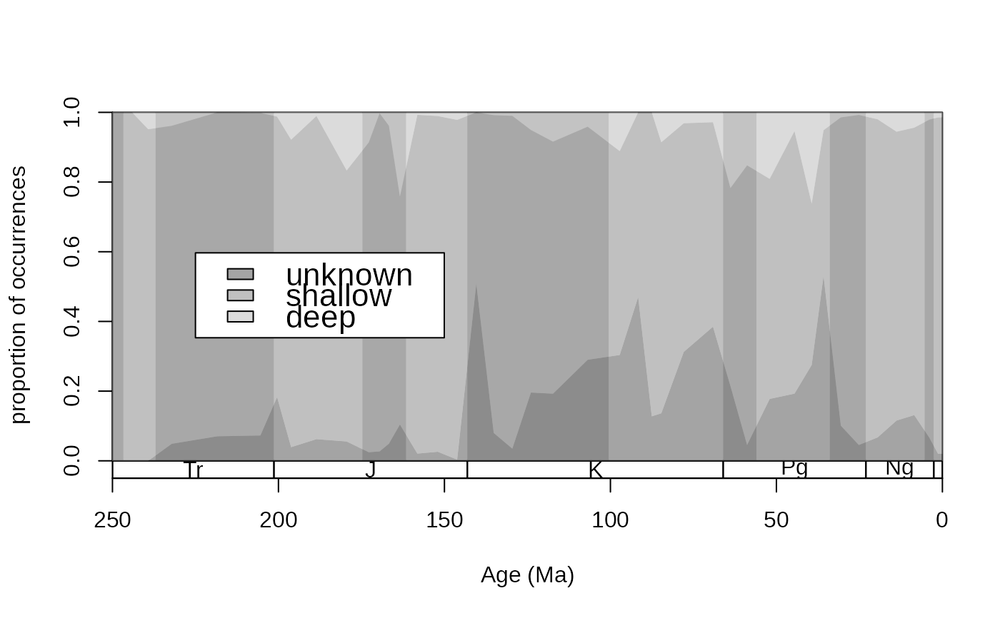
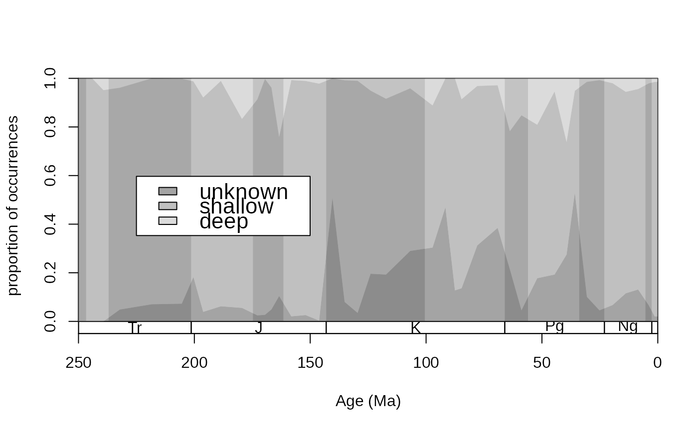

This function plots the changing shares of categories in association with an independent variable.
Usage
parts(
x,
b = NULL,
ord = "up",
prop = FALSE,
plot = TRUE,
col = NULL,
xlim = NULL,
border = NULL,
ylim = c(0, 1),
na.valid = FALSE,
labs = TRUE,
labs.args = NULL,
vertical = FALSE
)Arguments
- x
(numeric): The independent variable through which the proportion is tracked. Identical entries are used to assess which values belong together to a set. Their values represent the x coordinate over the plot.- b
(
characterorfactor): A single vector with the category designations. This vector will be segmented using the entries ofx.- ord
(character): The parameter of the variable order. Either"up"(increasing alphabetical order),"down"(decreasing alphabetical order) or the vector of categories in the desired order.- prop
(logical): Should the diagram show proportions (TRUE) or counts (FALSE)?- plot
(logical): If set toTRUE, then the function will plot the output. If set toFALSE, then a matrix with the relevant values will be returned. This output is similar to the output oftable, but handles proportions instantly.- col
(character): The color of polygons, has to a be a vector with as many entries as there are categories inb. By default(col=NULL)this is grayscale.- xlim
(numeric): Two values, analogous to thexlimargument ofplot, and has to exceed the range ofx. The polygons that represent non-zero values with the lowest and highest values ofxwill be extended to thesexcoordinates.- border
(character): The a single color of the polygon borders. By default (border=NA), no borders are drawn.- ylim
(numeric): Ifprop=TRUE, then the argument controls the position of the proportions in the plotting area (useful to show proportions as a sub plot in a plot). Ifprop=FALSE, then the entire plotting area will be shifted by a singleylimvalue.- na.valid
(logical): IfTRUE, than the missing values will be treated as an independent category. Entries wherexisNAwill be omitted either way.- labs
(logical): Should the category names be plotted?- labs.args
(list): Arguments for thetextfunction. If one entry for each argument is provided, then it will be applied to all labels. If the number of elements in an argument equals the number of categories to be plotted, then one to one assignment will be used. For example, for 4 categories in total, if thelabs.argslistcontains acolvector element with 4 values, see examples).- vertical
(logical): Horizontal or vertical plotting? IfFALSE, the independent variable will be horizontal, ifTRUE, the count/proportion variable will be horizontal. In the latter casexlimandylimhas reversed roles.
Details
This function is useful for displaying the changing proportions of a category as time progresses. Check out the examples for the most frequent implementations.
To be added: missing portions are omitted in this version, but should be represented as gaps in the polygons.
Examples
# dummy examples
# independent variable
slc<-c(rep(1, 5), rep(2,7), rep(3,6))
# the categories as they change
v1<-c("a", "a", "b", "c", "c") # 1
v2<-c("a", "b", "b", "b", "c", "d", "d") # 2
v3<-c("a", "a", "a", "c", "c", "d") #3
va<-c(v1, v2,v3)
# basic function
plot(NULL, NULL, ylim=c(0,1), xlim=c(0.5, 3.5))
parts(slc, va, prop=TRUE)

# vertical plot
plot(NULL, NULL, xlim=c(0,1), ylim=c(0.5, 3.5))
parts(slc, va, col=c("red" ,"blue", "green", "orange"), xlim=c(0.5,3.5),
labs=TRUE, prop=TRUE, vertical=TRUE)

# intensive argumentation
plot(NULL, NULL, ylim=c(0,10), xlim=c(0.5, 3.5))
parts(slc, va, ord=c("b", "c", "d", "a"), col=c("red" ,"blue", "green", "orange"),
xlim=c(0.5,3.5), labs=TRUE, prop=FALSE,
labs.args=list(cex=1.3, col=c("black", "orange", "red", "blue")))
 # just the values
parts(slc, va, prop=TRUE,plot=FALSE)
#> a b c d
#> 1 0.4000000 0.2000000 0.4000000 0.0000000
#> 2 0.1428571 0.4285714 0.1428571 0.2857143
#> 3 0.5000000 0.0000000 0.3333333 0.1666667
# real example
# the proportion of coral occurrences through time in terms of bathymetry
data(corals)
data(stages)
# time scale plot
tsplot(stages, shading="series", boxes="sys", xlim=c(250,0),
ylab="proportion of occurrences", ylim=c(0,1))
# plot of proportions
cols <- c("#55555588","#88888888", "#BBBBBB88")
types <- c("uk", "shal", "deep")
parts(x=stages$mid[corals$stg], b=corals$bath,
ord=types, col=cols, prop=TRUE,border=NA, labs=FALSE)
# legend
legend("left", inset=c(0.1,0), legend=c("unknown", "shallow", "deep"), fill=cols,
bg="white", cex=1.4)

# just the values
parts(slc, va, prop=TRUE,plot=FALSE)
#> a b c d
#> 1 0.4000000 0.2000000 0.4000000 0.0000000
#> 2 0.1428571 0.4285714 0.1428571 0.2857143
#> 3 0.5000000 0.0000000 0.3333333 0.1666667
# real example
# the proportion of coral occurrences through time in terms of bathymetry
data(corals)
data(stages)
# time scale plot
tsplot(stages, shading="series", boxes="sys", xlim=c(250,0),
ylab="proportion of occurrences", ylim=c(0,1))
# plot of proportions
cols <- c("#55555588","#88888888", "#BBBBBB88")
types <- c("uk", "shal", "deep")
parts(x=stages$mid[corals$stg], b=corals$bath,
ord=types, col=cols, prop=TRUE,border=NA, labs=FALSE)
# legend
legend("left", inset=c(0.1,0), legend=c("unknown", "shallow", "deep"), fill=cols,
bg="white", cex=1.4)
